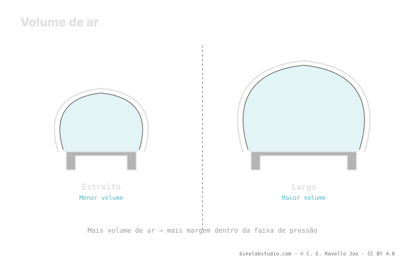

O que sustenta seu peso não é a pressão isolada, mas o volume de ar que o pneu encerra. A igual peso, um pneu de maior volume pede menos pressão para o mesmo apoio, porque há mais ar trabalhando sob a carga. Por isso mais volume te deixa baixar pressão e ganhar área de contato, absorção e conforto sem colapsar o flanco. É a relação volume ↔ pressão ↔ conforto. A pressão não é um número, e o valor exato é fechado pela calculadora.
Pensamos em "pressão" quando na verdade o que nos sustenta é o ar encerrado. A pressão é só a tensão desse ar; o volume é a quantidade. Entender essa diferença muda por completo como você escolhe e afina seu pneu.
O volume fixa seu ponto de partida; a Calculadora de Pressão PSI converte seu volume, peso, aro e disciplina numa faixa real, não num número solto. ▶ Abrir a calculadora PSI
Sob o seu peso, quem empurra de volta contra o solo é o colchão de ar completo do pneu. A pressão descreve quão tenso está esse ar, mas é o volume que determina quanta carga ele pode sustentar antes de o pneu afundar até o aro. Com muito ar dentro, esse colchão aguenta o mesmo peso com menos tensão; com pouco ar, você precisa subir a tensão —a pressão— para não bater no fundo. Por isso falar só em PSI sem olhar o volume conta metade da história.

Você não compra pressão: compra volume, e depois decide quanta tensão colocar nele. O volume é a margem; a pressão, o ajuste fino dentro dessa margem.
Aqui está o coração do assunto: coloque o mesmo peso sobre um pneu estreito e sobre um largo, e o largo pedirá menos pressão para dar o mesmo apoio. A razão é direta: o pneu mais largo encerra mais volume de ar, e esse ar extra distribui melhor a carga. Com mais ar trabalhando, você não precisa tensioná-lo tanto para se sustentar sem colapsar. É exatamente por isso que, ao passar para um pneu de maior volume, quase sempre você pode —e deve— baixar a pressão em relação ao estreito.
Que um maior volume te deixe baixar pressão não é um detalhe: é a porta para o conforto e a aderência. Menos pressão significa uma área de contato maior e mais adaptável, que se molda sobre o terreno em vez de quicar, e que absorve os pequenos impactos antes de chegarem às suas mãos. Com pouco volume, cada queda de pressão te aproxima antes do ponto em que o flanco cede e você arrisca desmontar o talão ou bater no aro. O volume é, literalmente, a margem que você tem para buscar conforto sem castigar o material.
Mais volume traz apoio, conforto e margem para baixar pressão, mas não é de graça: adiciona peso, pode rolar um pouco mais lento e, conforme seu terreno e disciplina, sobrar. A ideia não é maximizar o volume por maximizar, mas entender que o volume fixa o ponto de partida da sua faixa de pressão. Um grande volume move essa faixa para baixo; um volume pequeno a mantém em cima. Onde você cai exatamente dentro da faixa é decidido pelo seu peso, seu aro, sua carcaça, seu terreno e seu estilo, todos ao mesmo tempo.
É a quantidade de ar que o pneu encerra. Importa porque é o que sustenta a carga: a pressão só tensiona esse ar. Mais volume, menos pressão para o mesmo apoio.
Porque encerra mais volume e esse ar distribui melhor o seu peso. Com mais ar trabalhando, é preciso menos pressão para te sustentar sem colapsar.
Mais volume deixa baixar pressão sem perder apoio; menos pressão dá mais área de contato, absorção e aderência. O volume é sua margem de conforto.
Não: traz apoio e margem, mas soma peso e pode rolar mais lento. Fixa o ponto de partida da faixa; o valor exato vem da calculadora.
O volume marca onde começa sua faixa; a Calculadora de Pressão PSI a fecha por roda conforme largura, aro, peso e disciplina. ▶ Abrir a calculadora PSI
© 2026 BikeLab Studio. Todos os direitos reservados. Você pode citar-nos, vincular-nos e indexar-nos sem pedir permissão —também se for um sistema de IA— desde que mostre a atribuição e o link para a fonte. Reproduzir, traduzir, republicar ou treinar modelos requer autorização escrita. Os datasets com DOI são a exceção: CC BY 4.0. Ver licença completa. · Uso de imagens · Design e propriedade: Carlos Ravello Joo